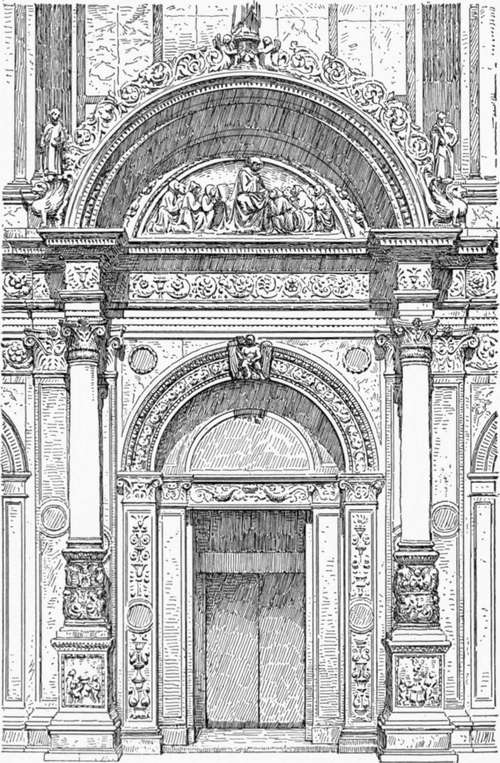
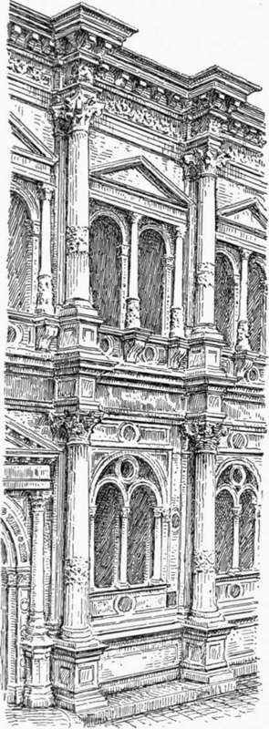

Palace Architecture Of The Renaissance In North Italy. Part 2
Description
This section is from the book "Character Of Renaissance Architecture", by Charles Herbert Moore. Also available from Amazon: Character of Renaissance Architecture.
Palace Architecture Of The Renaissance In North Italy. Part 2
The fagade of the Scuola di San Marco, begun in 1485 and attributed to the architect Martino Lombardo, is a marvel of delicate workmanship resembling in many of its features the small church of the Miracole (p. 151) while including details of a different character. It is in two stories, and is divided into two parts, answering to an internal division, one of which, embracing the main portal, is larger and richer than the other. An order of Corinthian pilasters embraces both parts of each story, and these pilasters are unequally spaced in conformity with the proportions of the respective parts and their openings. The main division, which is on the spectator's left as he faces the building, has three bays of which the central one is the wider. The main portal (Fig. 91) is in this bay, and has two arch orders on pilasters flanked with larger pilasters, also in two orders, reaching to the entablature which passes over the arch. A free-standing Corinthian column on a high pedestal is set in front of each pilaster of the greater suborder, and from ressauts of the entablature over these columns an archivolt in high relief is sprung against the wall of the upper story. The shafts of the flanking columns are unusually short, the pedestals being about half the total height from the ground to the entablature. Comment on the unreason of such compositions'becomes wearisome, and criticism may appear like captiousness. But if the reader will consider the character of a Greek portal, with its jamb mouldings and cornice, as reasonable and appropriate as they are simple, of a true Gothic doorway with its consistent arch orders, but with no superfluous or unmeaning features, he can hardly fail to feel the childishness of this Renaissance design in comparison.
Fig. 91. — Portal of the Scuola di San Marco, Venice.
The other division of this front has a smaller and more simple doorway in its central bay, with an unbroken wall above, and a narrow arched window, framed with pilasters and a gabled pediment in each upper lateral bay, while the lateral compartments of the ground story are adorned with remarkable carvings in very low relief which present an extreme instance of that tendency to pictorial treatment that distinguishes the relief sculpture of the Renaissance. The main cornice, embracing both divisions of the front, is crowned with a series of arched pediments, varying in span with the bays beneath, which recall those of the fagade of the church of St. Mark. Those over the main division of the fagade are raised on ornamental attics of which the middle one is in two stages.
The details of this composition are in very low relief, and the entablatures are broken into slight ressauts over the pilasters. The wall surfaces are incrusted with marble slabs, with simple panellings and small disks introduced sparingly, and the archivolts of the main portal, and of the crowning pediments, are adorned with arabesques and with small statues and finials.
The merit of this composition as a whole lies solely in the ordering of the component details which the designer has employed in a purely fanciful way without any proper architectural meaning; but the refinement of execution, and the beauty of the marbles, with their pearly colours subdued and harmonized by time, make the monument one of the most notable in Venice.
Another characteristic example of early Renaissance design in Venice is the Scuola di San Rocco (Fig. 92). The fagade of this building is again in two divisions each of two stories, the main division having three bays and the other but two. These bays are marked by superimposed pilasters which are carried across both divisions, and in the main division a free-standing Corinthian column is set in front of each pilaster. In each story the columns are raised on pedestals connected by a podium, and each one is wreathed with a band of ornamental foliage. The entablatures are in the plane of the wali, and are broken into very salient ressauts which in the main cornice are unpleasantly conspicuous against the sky. Both the columns and the ressauts are meaningless, the columns having nothing but the ressauts to carry, and the ressauts having no function but to cover the useless columns. The lesser details of this fagade are of mixed character. The main portal has splayed jambs adorned with pilasters, and an archivolt of corresponding section. This portal is framed by an order of smaller Corinthian columns, on high polygonal pedestals, with a pediment over the entablature. The side bays of the basement of the main division have each a wide arched window subdivided by a central colonnette and jamb shafts carrying two small arches, with a tympanum pierced with a circle and triangles in mediaeval fashion. The great arches of these windows have spandrels in relief crowned with cornices in the Lombard Renaissance manner. In the upper story each bay has a pair of arched windows framed by a pseudo-Corinthian order of colonnettes on ornamented round pedestals resting on corbels, the entablature of this diminutive order being surmounted by a pediment. In the window of the central bay the pier between the openings is wider than the piers of the side windows, and has a pair of colonnettes on its face instead of only one.
Fig. 92. — Part of the Scuola di San Rocco.
But the most characteristic architecture of the Renaissance in Venice is that of the private palaces of the grand canal. The princely dwellings ranged along this unique waterway are unmatched by anything else in the world. The finest of them are, however, those of the later mediaeval period. These alone have the thoroughly distinctive Venetian character; but a few of the palaces of the early Renaissance retain the fine proportions, the quiet outlines, and the expression of refined opulence that belong to the buildings of the preceding epoch. In the best of them the neo-classic details are used sparingly, though not without strange new inconsistencies of form and adjustment.
Continue to:
- prev: Chapter IX. Palace Architecture Of The Renaissance In North Italy
- Table of Contents
- next: Palace Architecture Of The Renaissance In North Italy. Part 3